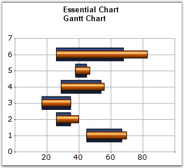

A Gantt chart is a graphical representation of the duration of tasks against the progression of time. In a Gantt chart, each task takes up one row. The expected time for each task is represented by a horizontal bar whose left end marks the expected beginning of the task and whose right end marks the expected completion of the task. Tasks may run sequentially, in parallel or overlapping.
You could then use another series to represent the completed portion of the different tasks. This new series will then contain data points with their beginning values coinciding with the beginning values of the data points from the previous series and the ending value based on the fraction of the work that has been completed on the task. This way, one can get a quick reading of a project progress by drawing a vertical line through the chart at the current date.

Figure 47: Chart displaying Gantt Series
Chart Details
|
Details | |
|
Number of Y values per point |
2. (1st is beginning value and the 2nd is the ending value) |
|
Number of Series |
One or more. |
|
Cannot be Combined with |
Pie, Bar, Polar, Radar. |
Gantt series can be added to the chart using the following code.
|
[C#]
// Create chart series and add data points into it. ChartSeries series = this.ChartWebControl1.Model.NewSeries("Series Name",ChartSeriesType.Gantt); series.Points.Add(0, 1, 5); series.Points.Add(1, 3, 7); series.Points.Add(2, 4, 8);
// Add the series to the chart series collection. this.ChartWebControl1.Series.Add(series); |
|
[C#]
// Create chart series and add data points into it. Dim series As ChartSeries = Me.ChartWebControl1.Model.NewSeries("Series Name", ChartSeriesType.Gantt) series.Points.Add(0, 1, 5) series.Points.Add(1, 3, 7) series.Points.Add(2, 4, 8) Me.ChartWebControl1.Series.Add(series) |